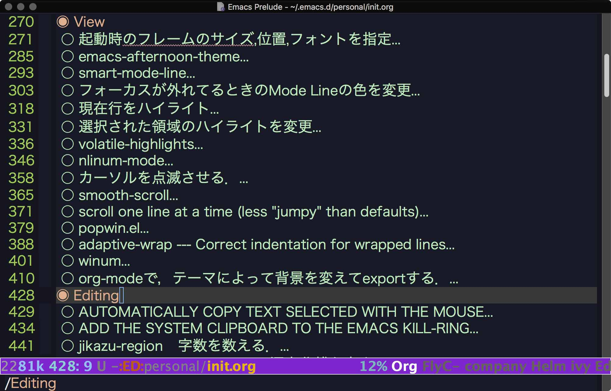
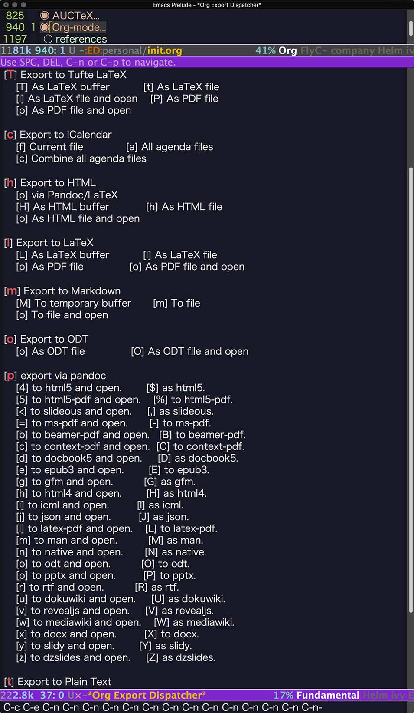
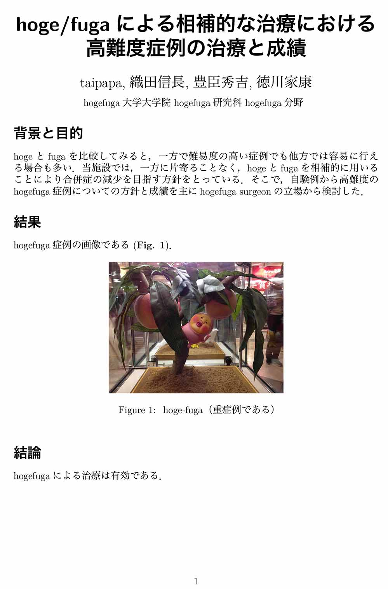
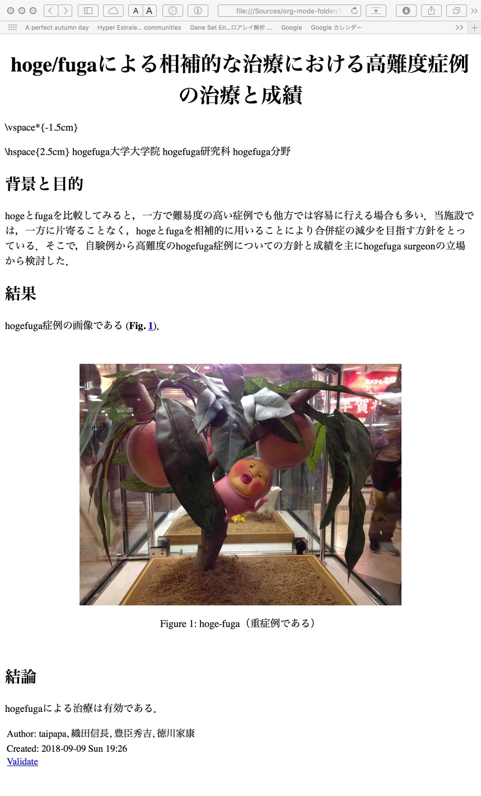

Table of Contents
1 Home
2 Posts
2.1 Emacsのorg-modeで論文を書く（その1） org mode emacs latex html word pandoc
私がEmacsを使用している理由の一番大きなものはorg-modeである．あらゆる文書作成にorg-modeを用いている．org-modeを使って論文を書くことに関しては，ググってもらえばおわかりのように，ネット上に山のように情報が存在する．「屋上屋を架してどうする」と言う自分の中の声を押し殺し，あくまで備忘録ということで，あえてここにまとめておく．なお，私はGTDのツールとしてはorg-modeを全く使用していないので，その種の情報はここにはまったくないことをお断りしておく．
2.1.1 目的
- org-modeからlatex経由で，文献がnumberingされ文献リストも付いたpdfを出力できるようにする
- org-modeから，文献がnumberingされ文献リストも付いたhtmlを出力できるようにする
- org-modeから，文献がnumberingされ文献リストも付いたwordファイルを出力できるようにする
2.1.2 org-modeで論文を書く利点
- LaTeXのややこしいコマンドを覚えなくても普通に文章を書いていけば，pdfで出力できる．
- latexの力を借りることで，文献の引用やリストの作成を自動化できる．
- 必要なら，htmlとしても出力できる．
- どうしても必要なら，なんとMicrosoft Wordのファイルとしても出力できてしまう．
2.1.3 org-modeの設定・セットアップ（pdf出力用）
設定が最もよくまとまっているのはTeX Wiki Emacs/Org mode 設定例のmacOSの部分である．正統派の方は，こちらを参考にしていただきたい．
私は，koma-script – A bundle of versatile classes and packages と Tufte-LaTeX を気に入っており，ほぼこれらしか使わないので，その設定を書いておく．その前に少し情報をまとめておく．
- koma-script – A bundle of versatile classes and packages
- 参考サイト１：Koma-Script 入門 ～初歩の初歩～
- 参考サイト２：使ってはいけない LaTeX のコマンド・パッケージ・作法
- 参考サイト３：LaTeX の「アレなデフォルト」 傾向と対策
- アメリカ生まれのaritcleなどの欧文標準文書クラスはデフォルトがレターサイズで余白が広すぎてしまう．これに対して，ヨーロッパ生まれのkoma-scriptはa4がデフォルトで，余白も広すぎず，レイアウトもなんとなくオシャレ（笑）である．当然のことながら，texliveに含まれており，texliveをインストールした時点で，インストールされている．
- Tufte-LaTeX
- 参考サイト１： tufte-org-mode
- Edward R. Tufteによって作られたページレイアウト．典型的には文章が左側に配置され，右側には広いマージンがありノート，文献，表，図などが配置されるスタイルである．こういうスタイルはよく見かけるものだと思うが，作者がはっきりしているとは，恥ずかしながら全く知らなかった．
- tufte-org-modeはこのtufte classをorg-modeから使えるようにした有り難いパッケージである．
- org-bullet
- 参考サイト１：https://github.com/sabof/org-bullets
- 参考サイト２：http://www.howardism.org/Technical/Emacs/orgmode-wordprocessor.html
pdf出力とは関係ないが，ついでに触れておく．要するにorg-modeの見た目が良くなるパッケージである．星印が色付きの丸や二重丸になる．やる気に繋がるので，見た目は大事である．こんな感じになる．

init.elには以下のようにuse-packageを用いて記述してインストール兼設定となる．もちろん，これも以前の記事（Emacsの設定（その2）設定ファイル（init.el）をorg-modeで管理する）で説明したように，init.orgに書いたものから生成されたinit.elである．
(use-package org-bullets :ensure t :config (add-hook 'org-mode-hook (lambda () (org-bullets-mode 1))))
- org-modeのinit.elの設定（pdf出力用）
- 前述のごとく，koma-scriptとTufte-LaTeXについて設定する．
何回もしつこいようだが，これも以前の記事（Emacsの設定（その2）設定ファイル（init.el）をorg-modeで管理する）で説明したように，init.orgに書いたものから生成されたinit.elである．
(require 'ox-latex) (add-to-list 'auto-mode-alist '("\\.org$" . org-mode)) (setq org-latex-default-class "bxjsarticle") (add-to-list 'org-latex-classes '("koma-article" "\\documentclass{scrartcl}" ("\\section{%s}" . "\\section*{%s}") ("\\subsection{%s}" . "\\subsection*{%s}") ("\\subsubsection{%s}" . "\\subsubsection*{%s}") ("\\paragraph{%s}" . "\\paragraph*{%s}") ("\\subparagraph{%s}" . "\\subparagraph*{%s}"))) (add-to-list 'org-latex-classes '("koma-jarticle" "\\documentclass{scrartcl} \\usepackage{amsmath} \\usepackage{amssymb} \\usepackage{xunicode} \\usepackage{fixltx2e} \\usepackage{zxjatype} \\usepackage[hiragino-dx]{zxjafont} \\usepackage{xltxtra} \\usepackage{graphicx} \\usepackage{longtable} \\usepackage{float} \\usepackage{wrapfig} \\usepackage{soul} \\usepackage{hyperref}" ("\\section{%s}" . "\\section*{%s}") ("\\subsection{%s}" . "\\subsection*{%s}") ("\\subsubsection{%s}" . "\\subsubsection*{%s}") ("\\paragraph{%s}" . "\\paragraph*{%s}") ("\\subparagraph{%s}" . "\\subparagraph*{%s}"))) ;; tufte-handout class for writing classy handouts and papers (add-to-list 'org-latex-classes '("tufte-handout" "\\documentclass[twoside,nobib]{tufte-handout} [NO-DEFAULT-PACKAGES] \\usepackage{zxjatype} \\usepackage[hiragino-dx]{zxjafont}" ("\\section{%s}" . "\\section*{%s}") ("\\subsection{%s}" . "\\subsection*{%s}"))) ;; tufte-book class (add-to-list 'org-latex-classes '("tufte-book" "\\documentclass[twoside,nobib]{tufte-book} [NO-DEFAULT-PACKAGES] \\usepackage{zxjatype} \\usepackage[hiragino-dx]{zxjafont}" ("\\part{%s}" . "\\part*{%s}") ("\\chapter{%s}" . "\\chapter*{%s}") ("\\section{%s}" . "\\section*{%s}") ("\\subsection{%s}" . "\\subsection*{%s}") ("\\paragraph{%s}" . "\\paragraph*{%s}")))
私はxelatexを使っているので，compileは以下のように設定している．
(setq org-latex-pdf-process '("xelatex -interaction nonstopmode -output-directory %o %f" "bibtex %b" "xelatex -interaction nontopmode -output-directory %o %f" "xelatex -interaction nonstopmode -output-directory %o %f"))ここまでEmacsを設定した上で，orgで原稿を書き，C-c C-eと打てば，以下のような画面になる．なお，pandocやTufteの項は別途記事にするので，とりあえずは無視してほしい．

- pdfで出力したければ，さらに，l o と打つと，As PDF file and openを選択したことになり，原稿がpdfとして出力され，かつ，skimでそのpdfがオープンされる．
- 同じく，htmlで出力したければ，h o と打つと，As HTML file and openを選択したことになり，ブラウザーでそのhtmlがオープンされる．
2.1.4 「org-modeで論文を書く」の実例
- それでは実例を示してみる．以下のような書類を作成し，hogefuga.orgとして保存する．hogefuga.jpgはorg fileと同じdirectoryにあるものとする．
#+LaTeX_CLASS: koma-jarticle
#+LaTeX_CLASS_OPTIONS: [12pt]
#+LATEX_HEADER: \usepackage{geometry}
#+LATEX_HEADER: \geometry{left=1in,right=1in,top=1in,bottom=1in}
#+LaTeX_HEADER: \usepackage[sort,compress,super,comma]{natbib}
#+STARTUP: overview
#+STARTUP: hidestars
#+OPTIONS: H:4 num:nil toc:nil \n:nil @:t ::t |:t ^:t -:t f:t *:t TeX:t LaTeX:t skip:nil d:nil todo:t pri:nil tags:not-in-toc
#+OPTIONS: date:nil
#+LINK_UP:
#+LINK_HOME:
#+TITLE: hoge/fugaによる相補的な治療における高難度症例の治療と成績
#+AUTHOR: taipapa, 織田信長, 豊臣秀吉, 徳川家康
\vspace*{-1.5cm}
\hspace{2.5cm} hogefuga大学大学院 hogefuga研究科 hogefuga分野
* 背景と目的
hogeとfugaを比較してみると，一方で難易度の高い症例でも他方では容易に行える場合も多い．当施設では，一方に片寄ることなく，hogeとfugaを相補的に用いることにより合併症の減少を目指す方針をとっている．そこで，自験例から高難度のhogefuga症例についての方針と成績を主にhogefuga surgeonの立場から検討した．
* 結果
hogefuga症例の画像である (*Fig. [[hoge_fuga]]*)．
#+NAME: hoge_fuga
#+caption: hoge-fuga（重症例である）
#+attr_latex: :float t :width 3in :align center
#+ATTR_HTML: :width 500 :float: wrap :align center
[[./hoge_fuga.jpg]]
* 結論
hogefugaによる治療は有効である．
ついで，前述のごとく，Emacsでこの文書を開いた状態で，C-c C-e l oと打てば，以下のようなpdfがskimで開かれる．

また，C-c C-e h oと打てば，以下のようなhtmlがbrowserで開かれる．latexのコマンドが見えてしまっているのがご愛嬌だが，htmlにしか出力しないのであれば，削除すればよい．
